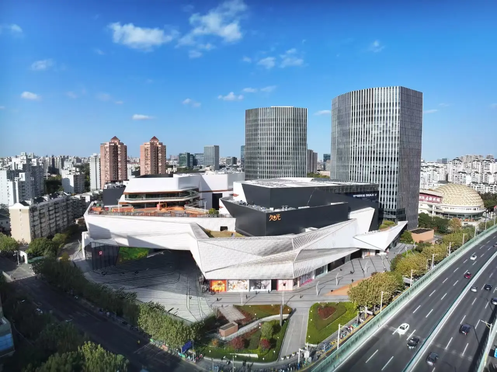
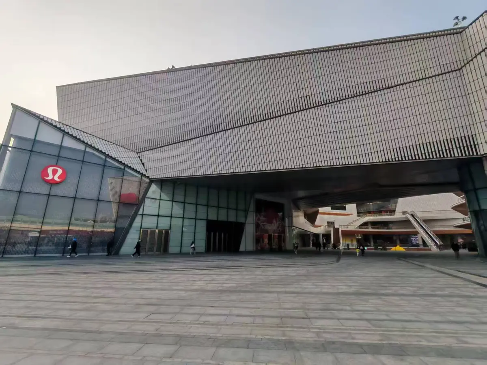
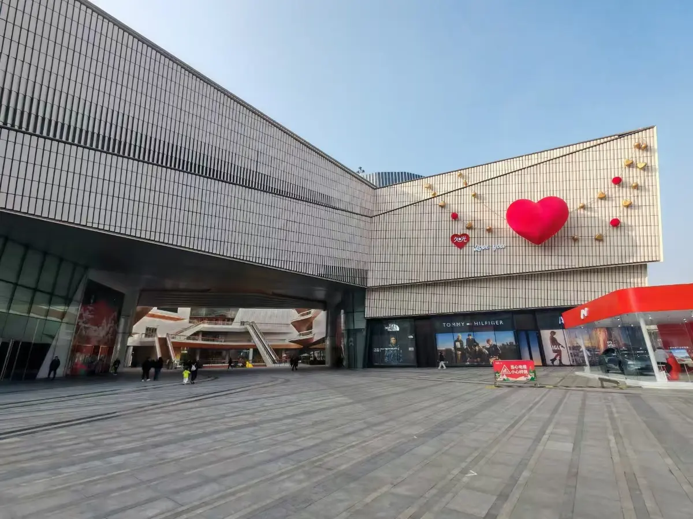

China Market Entry
시장 적합성과 진입 조건을 검토하고 현지 실행 범위를 정리합니다.Assess market fit and define a practical path to local execution.评估市场适配度，明确可执行的本地进入路径。
KOREA · CHINA / MARKET OPERATIONS
한국 제품과 콘텐츠가 중국 현지에서 실제 사업으로 이어지도록
시장 진입, 유통, 콘텐츠와 파트너 협업을 함께 운영합니다.We connect market entry, distribution, content and local partnerships so Korean products and content can build real business in China.连接市场进入、流通、内容与本地合作，让韩国产品和内容在中国形成真正的业务。


ABOUT COREGATE
CoreGate Global은 한국 기업의 중국 시장 진입과 현지 실행을 지원합니다. 시장별 과제를 선별하고, 필요한 파트너와 실행 범위를 프로젝트 단위로 설계합니다.CoreGate Global supports Korean companies entering and operating in China. We identify market priorities and structure the right local scope for each engagement.CoreGate Global协助韩国企业进入中国市场并开展本地执行。我们识别市场重点，并按项目设计合适的合作与执行范围。
시장과 채널의 특성을 살펴보고 사업에 필요한 파트너, 콘텐츠, 판매 방식을 현실적인 범위에서 연결합니다.We study the market and channel environment, then connect the partners, content and sales approach each business actually needs.我们结合市场与渠道特点，为项目匹配真正需要的合作伙伴、内容与销售方式。
CAPABILITIES
시장 적합성과 진입 조건을 검토하고 현지 실행 범위를 정리합니다.Assess market fit and define a practical path to local execution.评估市场适配度，明确可执行的本地进入路径。
온라인과 오프라인 판매 접점을 연결해 안정적인 운영 기반을 구축합니다.Connect online and offline touchpoints into a workable commerce operation.连接线上与线下销售触点，构建稳定的商业运营基础。
브랜드에 맞는 콘텐츠와 크리에이터 협업을 기획하고 운영합니다.Plan and operate brand-fit content and creator collaborations.策划并运营符合品牌定位的内容与创作者合作。
유통·미디어·운영 파트너를 사업 목적과 단계에 맞춰 연결합니다.Connect distribution, media and operating partners to the business need.根据业务目标与阶段对接流通、媒体及运营伙伴。
SELECTED WORK
행사, 유통, 콘텐츠를 각 시장과 목적에 맞는 방식으로 운영합니다.Events, distribution and content are operated around each market and objective.根据不同市场与目标，推进活动、流通与内容业务。

상하이 현지 공간을 기반으로 K-콘텐츠와 브랜드 협업을 연결하는 프로젝트를 준비하고 있습니다.A Shanghai-based project connecting K-content with brand collaboration.以上海本地空间为基础，连接K-内容与品牌合作的项目。
시장 특성과 판매 환경을 검토해 한국 제품의 중국 진입과 현지 유통을 지원합니다.Supporting China market entry and local distribution for Korean products.根据市场特点与销售环境，支持韩国产品进入中国及本地流通。
브랜드 메시지와 현지 콘텐츠 환경을 고려한 협업 프로젝트를 운영합니다.Operating collaborations shaped around brand messages and local content contexts.结合品牌信息与本地内容环境，开展创作者合作项目。
콘텐츠 역량과 성장 가능성을 갖춘 크리에이터가 브랜드와 함께 경험을 쌓고 해외 시장으로 확장할 수 있는 인큐베이팅 사업을 준비하고 있습니다.We are preparing an incubation business where promising creators can build experience with brands and expand into overseas markets.我们正在筹备创作者孵化业务，帮助具备内容能力与成长潜力的创作者积累品牌合作经验，并拓展海外市场。
COLLABORATION NETWORK
중국 현지 운영, 콘텐츠·미디어, 커머스·유통, 교육 분야의 파트너들과 사업 목적에 맞는 팀을 구성해 프로젝트를 진행합니다.We bring together local operations, content, commerce and education partners to build the right team for each project.联合中国本地运营、内容媒体、商业流通及教育领域的合作伙伴，为每个项目组建合适的执行团队。
현지 실행과 운영 지원On-the-ground execution本地执行与运营支持
콘텐츠 기획과 미디어 협업Content and media collaboration内容策划与媒体合作
판매 채널과 유통 연계Sales and distribution links销售渠道与流通对接
전문 교육과 프로그램 협업Specialist programs and training专业教育与项目合作
IN PREPARATION
크리에이터와 브랜드, 커머스 파트너가 국경을 넘어 협력할 수 있는 민간 네트워크를 준비하고 있습니다. 정식 출범 및 참여 관련 내용은 확정 후 안내합니다.An independent network for cross-border collaboration among creators, brands and commerce partners is in preparation. Launch and participation details will follow once confirmed.面向创作者、品牌与商业伙伴的跨境民间合作网络正在筹备中。正式成立及参与方式将在确认后发布。
BUSINESS INQUIRY
회사와 제품, 검토 중인 사업을 간단히 남겨주세요. 내용을 확인한 뒤 담당자가 직접 연락드리겠습니다.Tell us briefly about your company, product and current objective. A member of our team will follow up directly.请简要介绍公司、产品与当前业务目标。确认内容后，我们将由负责人直接联系。
zesia@coregateglobal.com